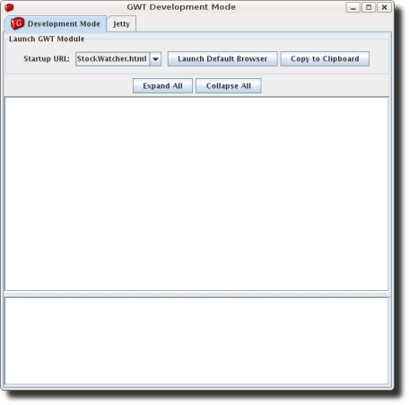

Except as otherwise noted,
the content of this page is licensed under the Creative Commons
Attribution 3.0 License.
Google Code offered in: English - Español - 日本語 - 한국어 - Português - Pусский - 中文(简体) - 中文(繁體)
At this point, you've downloaded the most recent distribution of Google Web Toolkit.
In this section, you'll create the StockWatcher project using either the Google Plugin for Eclipse or the GWT command-line utility webAppCreator. These utilities do the work of generating the project subdirectories and files you need to get started. To test that your project is configured correctly, you'll run the GWT starter application in development mode. Then you'll examine the project files that were created.
One of the benefits of using GWT is that you can leverage the tools, such as refactoring, code completion, and debugging, available in a Java IDE. In this tutorial, we use Eclipse because it is widely available and free. However, feel free to use your favorite IDE.
The Google Plugin for Eclipse contains a wizard for creating GWT applications. Here are steps for creating a starter application.
 .
.Use Google Web Toolkit is checked and that Use default SDK (GWT) is selected.Use Google App Engine is checked and that Use default SDK (App Engine) is selected.Configure SDKs... to specify the directory where GWT (and the App Engine SDK if necessary) was unzipped.Finish button.webAppCreator is a command-line tool included in the GWT download that generates the project subdirectories and files you need to get started. It creates a starter application, which you can run to ensure that all the components have been created and are hooked together correctly. As you develop your application, you'll replace the code for the starter application with your code.
Starting with GWT 1.6, the former command-line tools projectCreator and applicationCreator have been combined into webAppCreator.
For the StockWatcher project, you will run webAppCreator with the following parameters.
| Parameter | Definition | Example |
| -out | The directory to place the generated files. | StockWatcher |
| -junit |
The fully-qualified path name to junit.jar on your system. You can download JUnit at their sourceforge project page, or you can use the version that ships with Eclipse. |
|
| moduleName | The name of the GWT module you want to create. | com.google.gwt.sample.stockwatcher.StockWatcher |
webAppCreator -out StockWatcher
-junit "C:\eclipse\plugins\org.junit_3.8.2.v200706111738\junit.jar"
com.google.gwt.sample.stockwatcher.StockWatcher
Note: The -junit argument is optional. If you do not have junit installed on your system or do not wish to use junit in your application, you can leave it out.
Tip: If you include the GWT command-line tools in your PATH environment variable, you won't have to invoke them by specifying their full path.
Created directory StockWatcher/src Created directory StockWatcher/war Created directory StockWatcher/war/WEB-INF Created directory StockWatcher/war/WEB-INF/lib Created directory StockWatcher/src/com/google/gwt/sample/stockwatcher Created directory StockWatcher/src/com/google/gwt/sample/stockwatcher/client Created directory StockWatcher/src/com/google/gwt/sample/stockwatcher/server Created directory StockWatcher/test/com/google/gwt/sample/stockwatcher/client Created file StockWatcher/src/com/google/gwt/sample/stockwatcher/StockWatcher.gwt.xml Created file StockWatcher/war/StockWatcher.html Created file StockWatcher/war/StockWatcher.css Created file StockWatcher/war/WEB-INF/web.xml Created file StockWatcher/src/com/google/gwt/sample/stockwatcher/client/StockWatcher.java Created file StockWatcher/src/com/google/gwt/sample/stockwatcher/client/GreetingService.java Created file StockWatcher/src/com/google/gwt/sample/stockwatcher/client/GreetingServiceAsync.java Created file StockWatcher/src/com/google/gwt/sample/stockwatcher/server/GreetingServiceImpl.java Created file StockWatcher/build.xml Created file StockWatcher/README.txt Created file StockWatcher/test/com/google/gwt/sample/stockwatcher/client/StockWatcherTest.java Created file StockWatcher/.project Created file StockWatcher/.classpath Created file StockWatcher/StockWatcher.launch Created file StockWatcher/StockWatcherTest-dev.launch Created file StockWatcher/StockWatcherTest-prod.launch Created file StockWatcher/war/WEB-INF/lib/gwt-servlet.jar
Starting with GWT 1.6, static files have been moved to /war.
To see the complete list of options for webAppCreator, see Command-line Tools,
webAppCreator.
For more information on project structure, see the Developer's Guide, Directory/Package Conventions.
To check that all the project components were created, run the starter application in development mode. In development mode, you can interact with the application in a browser just as you would when it's eventually deployed.
webAppCreator creates an ant build file with a target for running the application in development mode.
ant devmode
Tip: If you include the Ant command-line tools in your PATH environment variable, you won't have to invoke them by specifying their full path.
Development mode opens with two tabs: the development mode code server and the Jetty HTTP server. Press the "Launch Default Browser" button to launch StockWatcher in development mode using your default browser. Or, you can click "Copy to Clipboard" to copy the launch URL and paste it into the browser of your choice.

Once you have started the development mode (from Eclipse or using the build.xml script) and entered the URL into the browser, the browser will attempt to connect. If this is your first time running a GWT application in development mode, you may be prompted to install the Google Web Toolkit Developer Plugin. Follow the instructions on the page to install the plugin, then restart the browser and return to the same URL.
GWT ships with a starter application to help you test that all the components are installed and configured before you start development. When you start writing the StockWatcher application, you'll replace this starter application code with your own.
Let's examine some of the generated files and see how they fit together to form your GWT project.
Open the module XML file, StockWatcher/src/com/google/gwt/sample/stockwatcher/StockWatcher.gwt.xml.
It contains the definition of the GWT module, the collection of resources that comprise a GWT application or a shared package. By default, StockWatcher inherits the core GWT functionality required for every project. Optionally, you can specify other GWT modules to inherit from.
<?xml version="1.0" encoding="UTF-8"?> <module rename-to='stockwatcher'> <!-- Inherit the core Web Toolkit stuff. --> <inherits name='com.google.gwt.user.User'/> <!-- Inherit the default GWT style sheet. You can change --> <!-- the theme of your GWT application by uncommenting --> <!-- any one of the following lines. --> <inherits name='com.google.gwt.user.theme.standard.Standard'/> <!-- <inherits name="com.google.gwt.user.theme.chrome.Chrome"/> --> <!-- <inherits name="com.google.gwt.user.theme.dark.Dark"/> --> <!-- Other module inherits --> <!-- Specify the app entry point class. --> <entry-point class='com.google.gwt.sample.stockwatcher.client.StockWatcher'/> <!-- Specify the paths for translatable code --> <source path='client'/> </module>
In the module XML file, you specify your application's entry point class. In order to compile, a GWT module must specify an entry point. If a GWT module has no entry point, then it can only be inherited by other modules. It is possible to include other modules that have entry points specified in their module XML files. If so, then your module would have multiple entry points. Each entry point is executed in sequence.
By default, StockWatcher uses two style sheets: the default GWT style sheet, standard.css (which is referenced via the inherited theme), and the application style sheet, StockWatcher.css which was generated by webAppCreator. Later in this tutorial, you'll learn how to override the default GWT styles.
Open the host page, StockWatcher/war/StockWatcher.html.
The code for a web application executes within an HTML document. In GWT, we call this the host page. For example, the host page for the StockWatcher project is StockWatcher.html.
The host page references the application style sheet, StockWatcher.css.
The host page references the path of JavaScript source code (generated by GWT) responsible for the dynamic elements on the page. The contents of the entire body element can be generated dynamically, for example, as it is with starter application. However, when you implement the StockWatcher application, you will use a mix of static and dynamic elements. You'll create an HTML <div> element to use as placeholder for the dynamically generated portions of the page.
To provide better cross-browser compatibility, GWT sets the doctype declaration to HTML 4.01 Transitional. This, in turn, sets the browser's rendering engine to "Quirks Mode". If you instead want to render the application in "Standards Mode", there are a number of other doctypes you can use to force the browser to this render mode. In general, GWT applications will work in "Standards Mode" just as well as "Quirks Mode", but in some cases using widgets like panels and such may not render correctly. This problem has been greatly improved since GWT 1.5, and more work is being done to solve this problem once and for all.
GWT provides a mechanism for helping your application meet users' expectations of a web page, specifically in their ability to use the browser's back button in such situations as a multi-page wizard or a shopping cart/checkout scenario. The host page contains the iframe tag necessary for incorporating history support in your GWT application.
To learn more about managing browser history in a GWT application, see the Developer's Guide, History.
Open the application style sheet, StockWatcher/war/StockWatcher.css.
A style sheet is associated with each project. By default, the application style sheet, StockWatcher.css, contains style rules for the starter application. In the Applying Style section of this tutorial, you'll replace the style rules for the starter application, with the style rules for the StockWatcher application.
Just as for any web page, you can specify multiple style sheets. List multiple style sheets in their order of inheritance; that is, with the most specific style rules in the last style sheet listed.
Open the source for the StockWatcher entry point class, StockWatcher/src/com/google/gwt/sample/stockwatcher/client/StockWatcher.java.
Currently, StockWatcher.java contains the Java source for the starter application. In this tutorial, you'll replace this code with the client-side code for StockWatcher.
The StockWatcher class implements the GWT interface EntryPoint. It contains the method onModuleLoad. Because the StockWatcher class is specified as the entry point class in StockWatcher's module definition, when you launch StockWatcher the onModuleLoad method is called.
The StockWatcher class inherits functionality via other GWT modules you included in StockWatcher's module definition (StockWatcher.gwt.xml). For example, when building the user interface, you'll be able to include types and resources from the package com.google.gwt.user.client.ui because it is part of the GWT core functionality included in the GWT module com.google.gwt.user.User.
At this point you've created the stub files for the StockWatcher application and loaded the project into Eclipse (or whatever Java IDE you prefer).
Now you're ready to design the StockWatcher application.